Les montres |
Prix moyen |
Description |
| 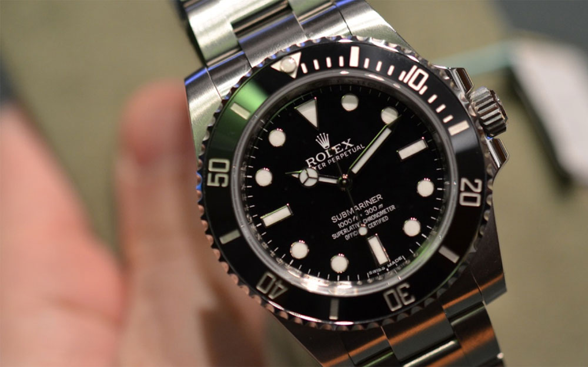 Rolex Submariner |
7500 euros |
Chez Rolex, la montre mythique, la reine des reines est sans doute la Rolex Submariner, la première plongeuse signée par la maison genevoise, une montre étanche à 100 mètres née en 1953 sous la référence 6204. Après avoir donné naissance en 1926 à l’Oyster (première montre-bracelet étanche au monde), Rolex se positionne avec la Sub’ comme une marque qui innove et propose des modèles dédiés aux professionnels… Le fait que des grands noms comme James Bond dès 1962 aient adopté ce modèle participe également sans aucun doute au statut de la Rolex Submariner. |
| 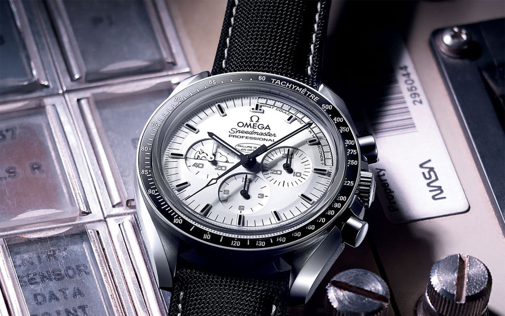 Omega Speedmaster |
4000 euros |
Crée en 1957, l’Omega Speedmaster est certainement l’un des chronographes parmi les plus connus au monde tout simplement car il s’agit de la première montre jamais portée sur la Lune. Le 21 juillet 1969, l’Omega Speedmaster fait ses premiers pas sur la Lune au poignet de Buzz Aldrin et se voit ainsi depuis surnommé « The Moonwatch » . Sélectionnée pour accompagner tous les vols habités de la NASA depuis mars 1965, l’Omega Speedmaster s’est distinguée depuis son lancement pour sa précision, sa lisibilité et sa robustesse. |
| 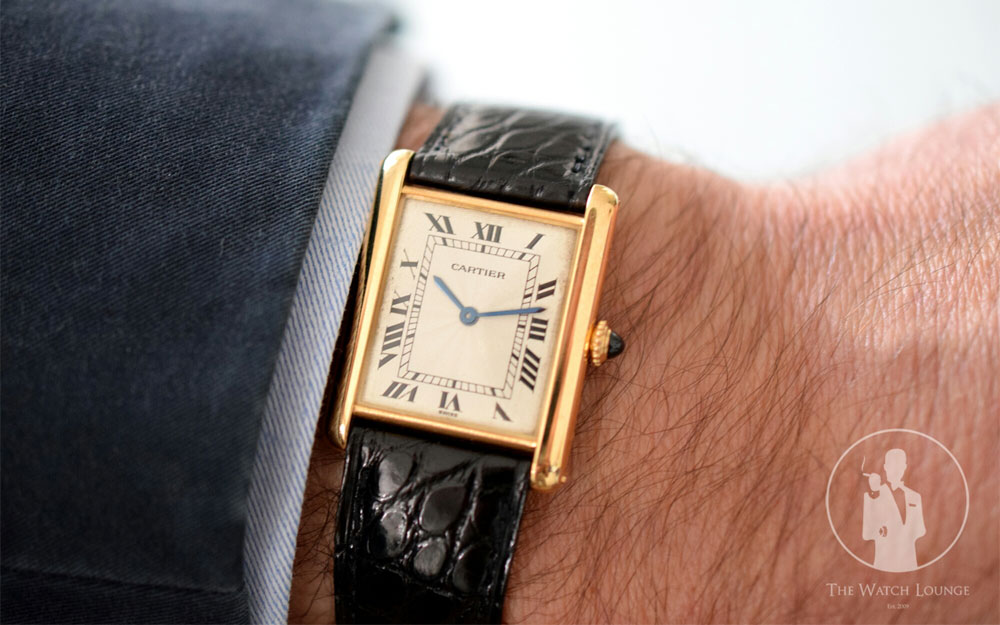 Cartier Tank |
A partir de 1000 euros |
Présentée pour la première fois en 1917, la Cartier Tank tire son inspiration de la première guerre mondiale et plus précisément des chars d’assaut, des tanks… Ce modèle de forme carré ou rectangulaire représente un char d’assaut vu du dessus. Ce modèle culte au design relativement classique signé Cartier fut commercialisé à partir de 1919 et adopté par de nombreuses personnalités à l’image de Jacky et John Kennedy, Ailain Delon, Andy Wahrol… |
| 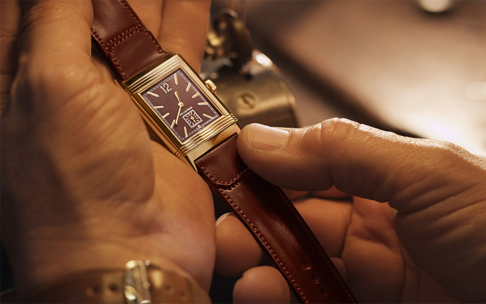 Jaeger-LeCoultre Reverso |
A partir de 8000 euros |
La Reverso de Jaeger-LeCoultre voit le jour en 1931 et répond à la demande d’un officier britannique souhaitant une montre capable de résister aux chocs infligés à une montre lors d’un match de polo… La montre Reverso est une montre de prestige susceptible de coulisser dans son support et pouvant se retourner sur elle-même, une montre dont le cadran peut se mettre à l’abri. Succès immédiat pour le modèle qui connaît ensuite une certaines désaffection avant sa renaissance durant les années 1970. |
| 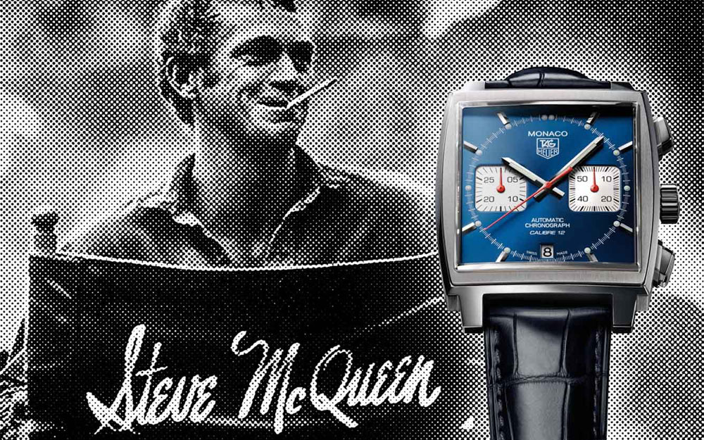 TAG Heuer Monaco |
A partir de 1000 euros |
C’est en 1969 que la Heuer Monaco voit le jour pour la première fois, une montre désormais célèbre au design étonnant avec son cadran carré et son nouveau mouvement, le célèbre calibre 11. Malgré une présence remarquée au poignée de Steve Mc Queen en 1971 dans le film « Le Mans » , la Monaco ne trouve pas son public avant en 1985 et le rachat de Heuer par TAG. Ce n’est qu’en 1999 avec la reprise de TAG Heuer par LVMH que la TAG Heuer Monaco (premier chronographe automatique carré au monde) prend véritablement son envol aidé par un marketing plus soutenu… |
| 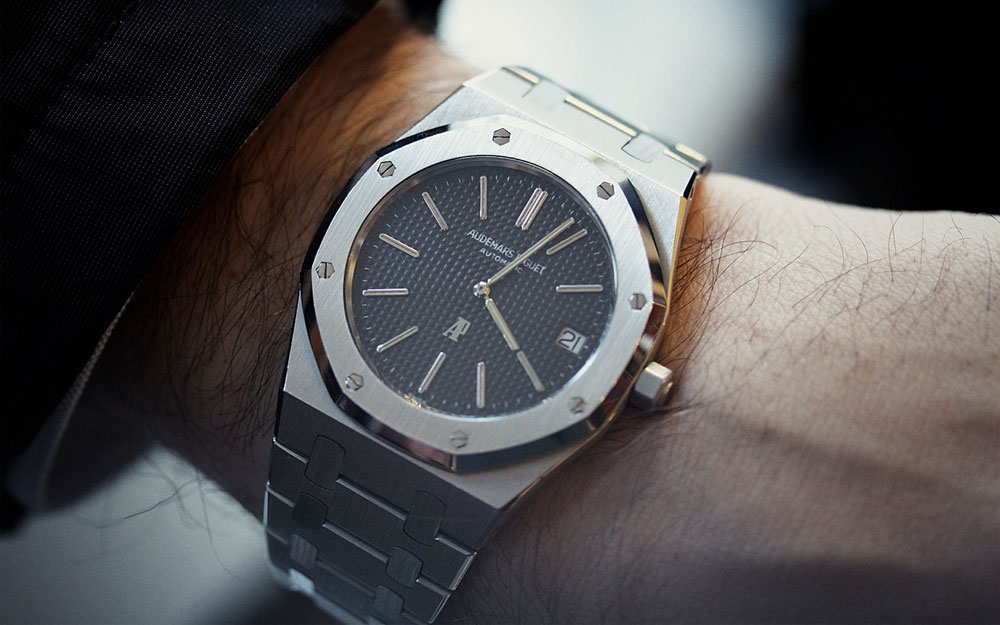 Audemars Piguet Royal Oak |
A partir de 4000 euros |
Présentée en 1972 à la foire de Bâle, l’Audemars Piguet Royal Oak est la première montre de luxe en acier inoxydable, un coup de génie pour ce modèle au design original ! La Royal Oak qui tire son nom des navires de guerre de la marine royale britannique est facilement reconnaissable grâce à son design unique crée par Gerald Genta, un cadran octogonal doté de huit vis hexagonales. Une montre de luxe sportive et chic, un pari audacieux mais réussi pour la marque suisse du Brassus. |
| 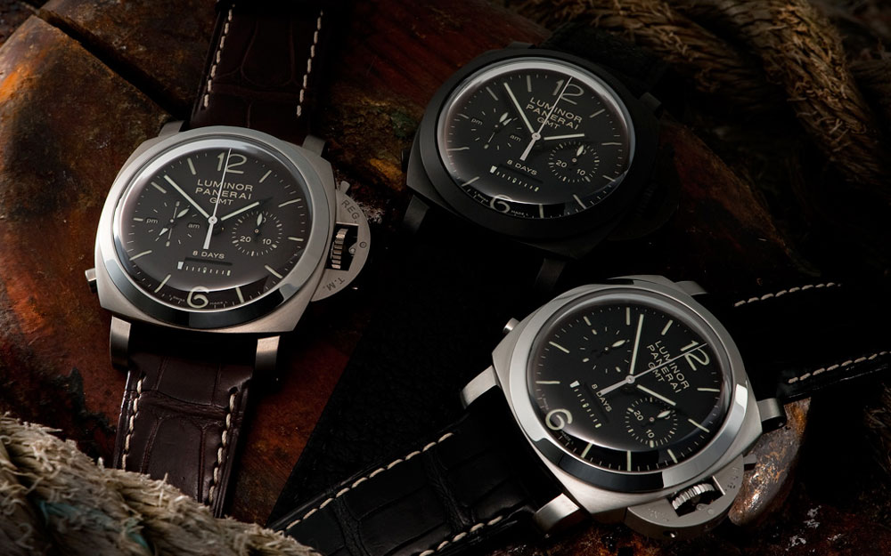 Panerai Luminor |
4700 euros |
En 1949, le Luminor (substance luminescente à base de tritium) succède au Radiomir (à base de radium) est précède ainsi de peu logiquement la naissance de la gamme Luminor de Panerai qui voit le jour en 1950. Une montre italienne au design atypique et reconnaissable grâce à son pont protège couronne, ses cornes en forme de coussin et sa lunette plate et élargie. |
| 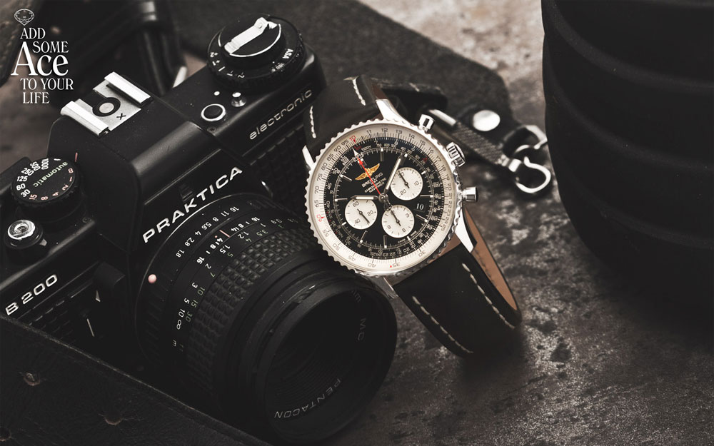 Breitling Navitimer |
A partir de 21000 euros |
La Breitling Navitimer (contraction de Navigation & Timer) est sans doute la montre la plus connue chez Breitling, une montre d’aviateur conçue en 1952 pour les pilotes et professionnels de l’aviation. Le design de la Breitling Navitimer est facilement reconnaissable grâce à la présence d’une règle à calcul, un outil visant à faciliter les calculs en vol des pilotes d’avion. Une montre emblématique qui fut le choix pendant longtemps le choix des aviateurs… |
| 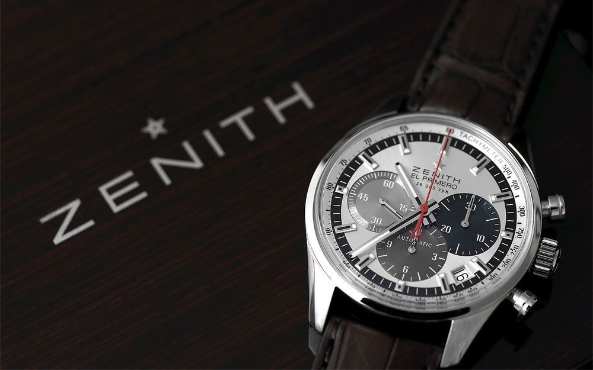 Zenith El Primero |
A partir de 2500 euros |
Chez Zenith, il n’est pas question de modèle mythique, mais surtout de calibre mythique puisque Zenith El Primero fait tout d’abord référence à un mouvement présenté en 1969 ! Un chronographe capable de mesurer les temps courts au 1/10e de seconde ce qui fait de lui le chronographe de série le plus précis au monde. Une collection de montres porte désormais le nom de ce calibre mythique (9 mois en moyenne sont nécessaires pour réaliser une seule montre de la Collection El Primero) et c’est d’ailleurs avec un chronographe El Primero au poignet que Felix Baumgartner est devenu le 14 octobre 2012 le premier homme à franchir le mur du son en chute libre. |
| 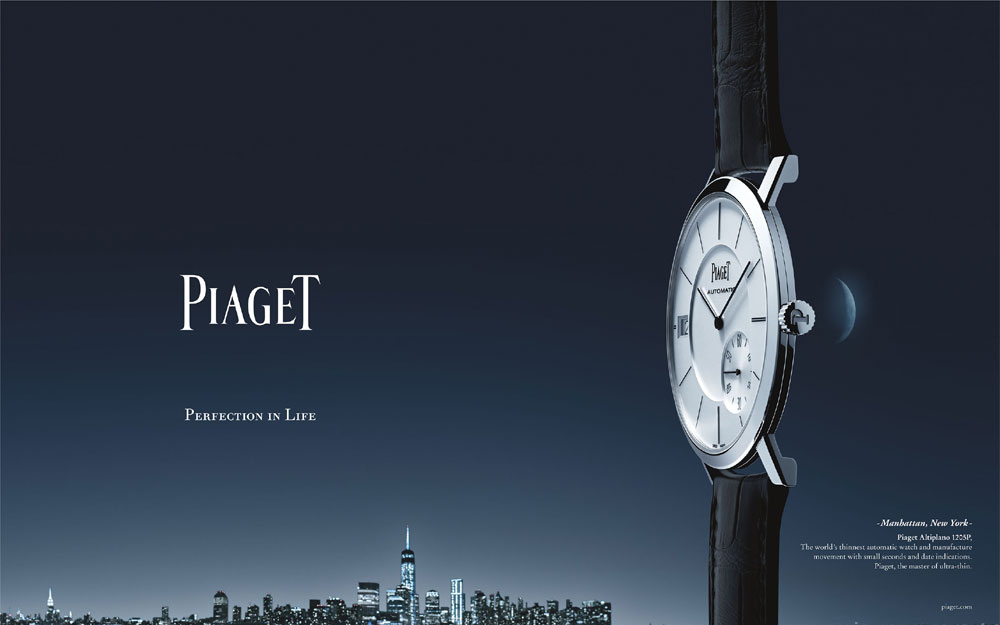 Piaget Altiplano |
A partir de 4000 euros |
Spécialiste de la montre de luxe extra plate, la maison suisse Piaget présente depuis la fin des années 1950 son travail de miniaturisation des mouvements, des calibres plus fins, mais toujours aussi robustes et précis. De cet esprit de conquête de l’extra-plat est née au début des années 1990 la collection de montres Altiplano. Une collection qui a notamment donné naissance à l’Altiplano 900P, la montre mécanique la plus plate au monde avec ses 3,65 mm d’épaisseur, une montre fusionnant calibre à remontage manuel et habillage. |
| 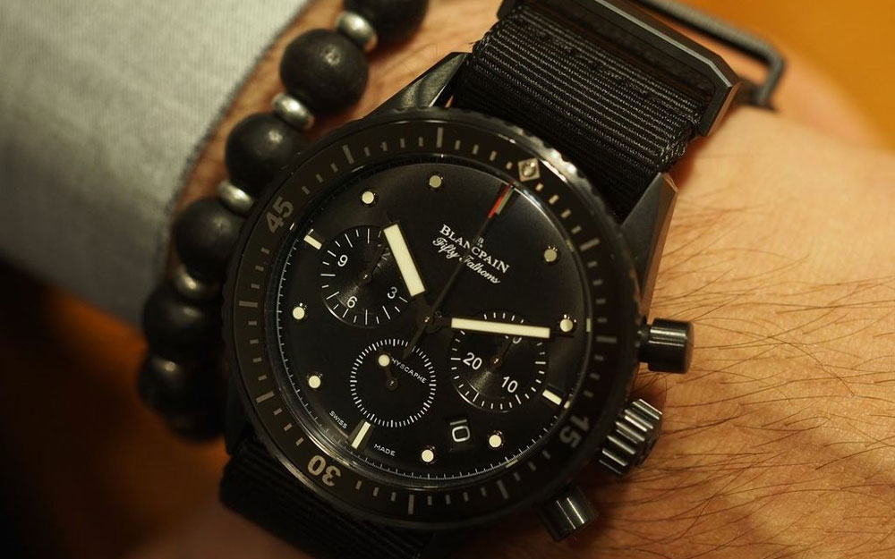 Blancpain Fifty Fathoms |
A partir de 15000 euros |
La Fifthy Fathoms de Blancpain voit le jour en 1953, elle est considérée comme la première vraie montre de plongée moderne, une montre de prestige conçue originellement pour des nageurs de combat. Une montre qui tire son nom de son étanchéité d’époque, 50 brasses, soit 91,45 mètres de profondeur. Adoptée par les militaires puis par des professionnels de la plongée sous-marine comme Jacques Yves Cousteau, la Fifty Fathoms rencontra aussi son succès auprès des plongeurs civils. |
| 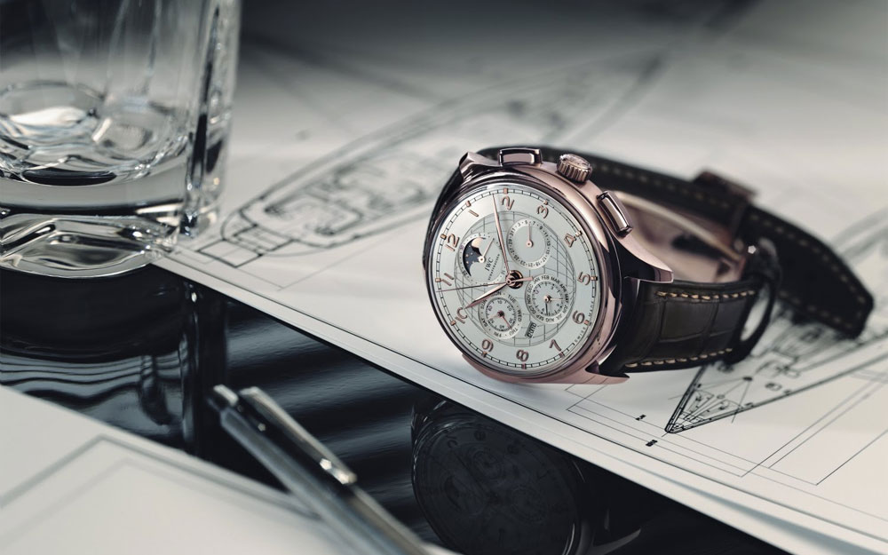 IWC Portugaise |
A partir de 5000 euros |
L’histoire de la Portugaise d’IWC démarre en 1939 ou même en 1938 quand deux marchands de montres portugais font part à la marque de leur regret de ne pouvoir porter au poignet une dont la précision serait équivalente à celle des chronomètres des montres goussets. La suite, c’est la naissance de la Portugaise, une montre classique au style épuré qui représente encore aujourd’hui le savoir-faire de la marque. |
| 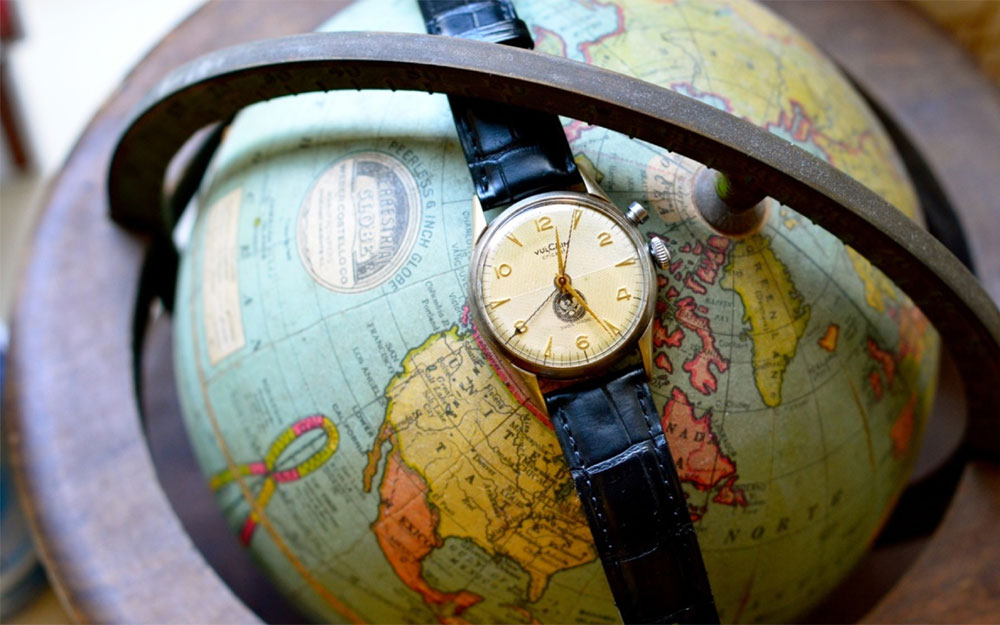 Vulcain Cricket |
A partir de 3000 euros |
La Vulcain Cricket qui voit le jour en 1947 représente une réelle avancée technique grâce à l’intégration d’une fonction réveil produisant un volume sonore important, ceci grâce à un marteau venant frapper une paroi, et une autre paroi faisant caisse de résonance pour amplifier le bruit. Une montre étonante surnommée « Montre des Présidents » suite à l’adoption du modèle par les présidents américains Trumann, Eisenhower, Johnson, Nixon, Reagan… |
| 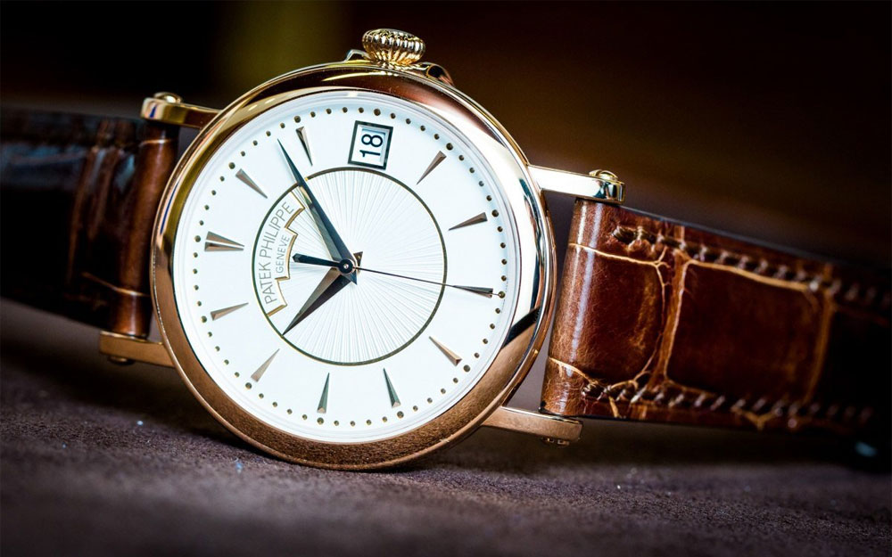 Patek Philippe Calatrava |
A partir de 18000 euros |
Inspirée du mouvement du Bauhaus (qui pose les bases de la réflexion sur l’architecture moderne), la Patek Philippe Calatrava est une montre de luxe de légende particulièrement épurée tant au niveau de la technique que du design. Créée en 1932, la Calatrava est une montre classique, le résultat selon les propres mots de la marque « d’une philosophie d’avant-garde privilégiant la pureté des lignes et l’élégance discrète » . |